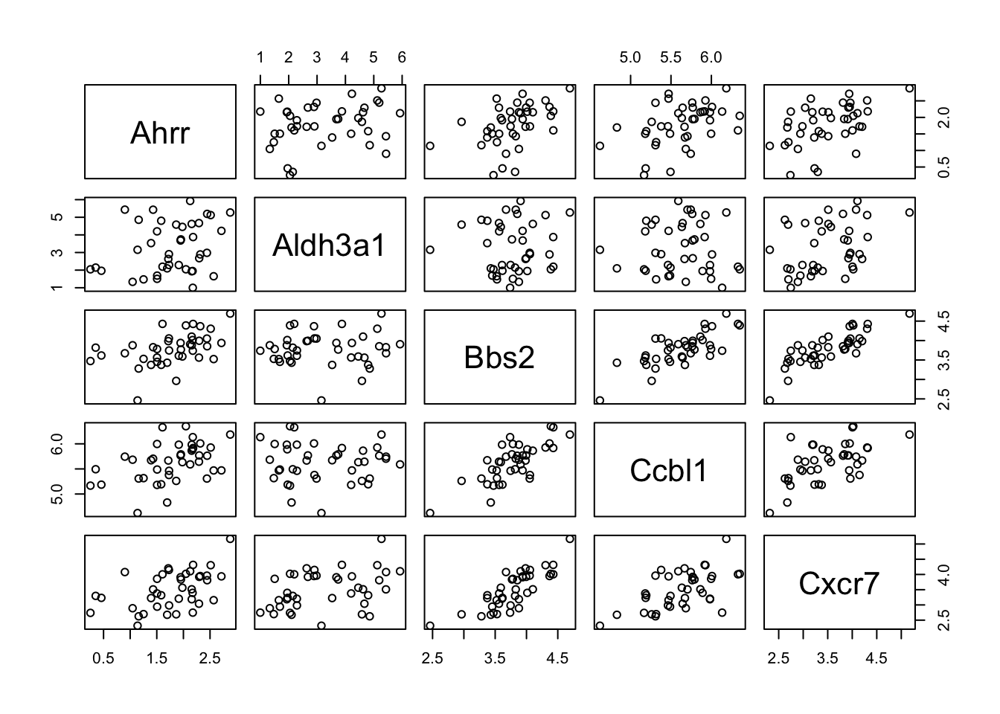
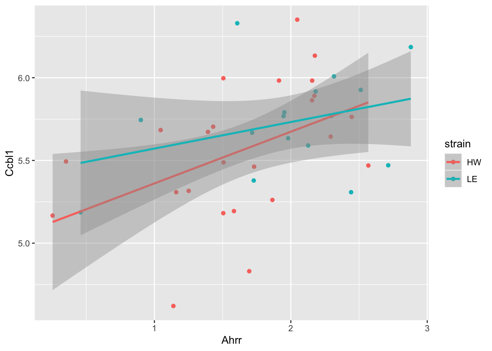
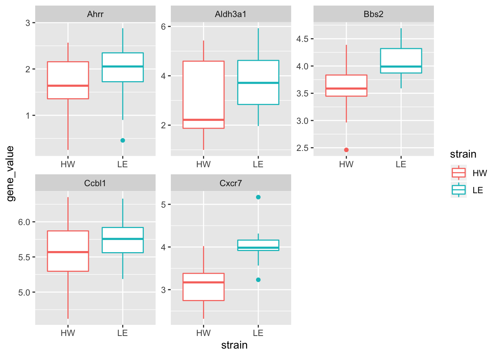

session3
Kevin Wang
05/11/2019
Loading packages
library(tidyverse)
library(skimr)Loading cleaned sample data
session3_data = read_csv(file = "data/wide_sample_ge_data.csv") %>%
dplyr::filter(dose == 0) %>%
dplyr::mutate_at(.vars = vars(Ahrr:Cxcr7), .funs = log)## Parsed with column specification:
## cols(
## strain = col_character(),
## sample = col_character(),
## time = col_double(),
## dose = col_double(),
## Ahrr = col_double(),
## Aldh3a1 = col_double(),
## Bbs2 = col_double(),
## Ccbl1 = col_double(),
## Cxcr7 = col_double()
## )dose_order = sort(unique(session3_data$dose))
time_order = sort(unique(session3_data$time))
clean_data = session3_data %>%
dplyr::mutate(dose = factor(dose, dose_order),
time = factor(time, time_order)) %>%
dplyr::select(strain, Ahrr:Cxcr7)Correlation analysis
clean_data %>%
dplyr::select_if(is.numeric) %>%
pairs
clean_data %>%
ggplot(aes(x = Ahrr,
y = Ccbl1,
colour = strain)) +
geom_point() +
geom_smooth(method = "lm")
cor(clean_data$Ahrr, clean_data$Ccbl1)## [1] 0.4385005clean_data %>%
group_by(strain) %>%
skimr::skim()## Skim summary statistics
## n obs: 40
## n variables: 6
## group variables: strain
##
## ── Variable type:numeric ──────────────────────────────────────────────────────────────────────────────────────
## strain variable missing complete n mean sd p0 p25 p50 p75 p100
## HW Ahrr 0 24 24 1.64 0.59 0.25 1.36 1.64 2.16 2.57
## HW Aldh3a1 0 24 24 2.94 1.45 1 1.87 2.22 4.59 5.43
## HW Bbs2 0 24 24 3.61 0.39 2.46 3.45 3.59 3.83 4.39
## HW Ccbl1 0 24 24 5.56 0.41 4.62 5.3 5.57 5.87 6.35
## HW Cxcr7 0 24 24 3.13 0.43 2.32 2.74 3.17 3.38 4.02
## LE Ahrr 0 16 16 1.99 0.63 0.46 1.73 2.05 2.35 2.88
## LE Aldh3a1 0 16 16 3.75 1.23 1.96 2.84 3.71 4.62 5.93
## LE Bbs2 0 16 16 4.05 0.32 3.59 3.87 3.99 4.32 4.69
## LE Ccbl1 0 16 16 5.73 0.31 5.19 5.56 5.76 5.92 6.33
## LE Cxcr7 0 16 16 4.04 0.4 3.23 3.92 3.98 4.16 5.17
## hist
## ▂▁▁▅▇▃▇▃
## ▅▇▃▁▁▁▆▂
## ▁▁▁▃▇▇▂▁
## ▃▁▆▆▇▆▆▂
## ▁▇▃▃▇▃▁▃
## ▂▂▁▂▇▆▇▃
## ▃▇▂▆▂▂▃▃
## ▅▂▇▃▁▃▃▂
## ▅▅▂▇▇▇▂▂
## ▂▂▇▇▅▁▁▂clean_data_nest = clean_data %>%
group_by(strain) %>%
tidyr::nest()
clean_data_nest## # A tibble: 2 x 2
## # Groups: strain [2]
## strain data
## <chr> <list<df[,5]>>
## 1 HW [24 × 5]
## 2 LE [16 × 5]clean_data_nest$data## <list_of<
## tbl_df<
## Ahrr : double
## Aldh3a1: double
## Bbs2 : double
## Ccbl1 : double
## Cxcr7 : double
## >
## >[2]>
## [[1]]
## # A tibble: 24 x 5
## Ahrr Aldh3a1 Bbs2 Ccbl1 Cxcr7
## <dbl> <dbl> <dbl> <dbl> <dbl>
## 1 2.57 1.65 3.52 5.47 3.16
## 2 0.352 2.14 3.82 5.49 3.30
## 3 0.254 2.05 3.47 5.17 2.74
## 4 2.16 1.93 3.88 5.98 3.19
## 5 1.91 2.29 3.61 5.98 3.20
## 6 1.05 1.33 3.88 5.68 2.89
## 7 2.17 1.95 4.01 5.89 3.40
## 8 2.16 4.62 4.10 5.86 3.51
## 9 1.51 1.51 3.78 6.00 3.86
## 10 2.18 0.998 3.74 6.13 2.75
## # … with 14 more rows
##
## [[2]]
## # A tibble: 16 x 5
## Ahrr Aldh3a1 Bbs2 Ccbl1 Cxcr7
## <dbl> <dbl> <dbl> <dbl> <dbl>
## 1 2.71 4.23 3.94 5.47 3.94
## 2 0.900 5.43 3.67 5.74 4.08
## 3 1.98 4.45 3.59 5.63 3.56
## 4 1.61 2.20 4.43 6.33 4.01
## 5 1.95 3.74 3.77 5.79 3.84
## 6 2.32 2.89 4.37 6.01 3.95
## 7 2.30 2.68 3.99 5.77 3.92
## 8 2.88 5.27 4.69 6.19 5.17
## 9 2.51 5.12 4.30 5.93 4.30
## 10 2.13 5.93 3.91 5.59 4.11
## 11 2.18 3.88 4.43 5.92 4.32
## 12 1.73 2.91 4.06 5.38 4.15
## 13 0.459 1.96 3.62 5.19 3.23
## 14 1.95 3.68 3.94 5.77 3.91
## 15 2.44 2.98 4.05 5.31 3.96
## 16 1.72 2.63 3.99 5.67 4.20purrr::map(clean_data_nest$data, ~ cor(.x$Ahrr, .x$Ccbl1))## [[1]]
## [1] 0.450334
##
## [[2]]
## [1] 0.326049Scatter plot
clean_data %>%
ggplot(aes(x = strain,
y = Ahrr,
colour = strain)) +
geom_boxplot()
Multiple genes
clean_data_long = clean_data %>%
tidyr::pivot_longer(cols = Ahrr:Cxcr7,
names_to = "gene_symbol",
values_to = "gene_value")
clean_data_long %>%
ggplot(aes(x = strain,
y = gene_value,
colour = strain)) +
geom_boxplot() +
facet_wrap(~gene_symbol, scales = "free")
Session Info
sessionInfo()## R version 3.6.1 (2019-07-05)
## Platform: x86_64-apple-darwin15.6.0 (64-bit)
## Running under: macOS Mojave 10.14.6
##
## Matrix products: default
## BLAS: /System/Library/Frameworks/Accelerate.framework/Versions/A/Frameworks/vecLib.framework/Versions/A/libBLAS.dylib
## LAPACK: /Library/Frameworks/R.framework/Versions/3.6/Resources/lib/libRlapack.dylib
##
## locale:
## [1] en_AU.UTF-8/en_AU.UTF-8/en_AU.UTF-8/C/en_AU.UTF-8/en_AU.UTF-8
##
## attached base packages:
## [1] stats graphics grDevices utils datasets methods base
##
## other attached packages:
## [1] rmarkdown_1.16 visdat_0.5.3 stringi_1.4.3 skimr_1.0.7
## [5] readxl_1.3.1 janitor_1.2.0 forcats_0.4.0 stringr_1.4.0
## [9] dplyr_0.8.3 purrr_0.3.3 readr_1.3.1 tidyr_1.0.0
## [13] tibble_2.1.3 ggplot2_3.2.1 tidyverse_1.2.1
##
## loaded via a namespace (and not attached):
## [1] tidyselect_0.2.5 xfun_0.10 reshape2_1.4.3 haven_2.1.1
## [5] lattice_0.20-38 snakecase_0.11.0 colorspace_1.4-1 vctrs_0.2.0
## [9] generics_0.0.2 htmltools_0.4.0 yaml_2.2.0 utf8_1.1.4
## [13] rlang_0.4.1 pillar_1.4.2 glue_1.3.1 withr_2.1.2
## [17] modelr_0.1.5 plyr_1.8.4 lifecycle_0.1.0 munsell_0.5.0
## [21] gtable_0.3.0 cellranger_1.1.0 rvest_0.3.4 evaluate_0.14
## [25] labeling_0.3 knitr_1.25 fansi_0.4.0 broom_0.5.2
## [29] Rcpp_1.0.2 scales_1.0.0 backports_1.1.5 jsonlite_1.6
## [33] digest_0.6.22 hms_0.5.2 packrat_0.5.0 grid_3.6.1
## [37] cli_1.1.0 tools_3.6.1 magrittr_1.5 lazyeval_0.2.2
## [41] crayon_1.3.4 pkgconfig_2.0.3 zeallot_0.1.0 ellipsis_0.3.0
## [45] rsconnect_0.8.15 xml2_1.2.2 lubridate_1.7.4 assertthat_0.2.1
## [49] httr_1.4.1 rstudioapi_0.10 R6_2.4.0 nlme_3.1-141
## [53] compiler_3.6.1